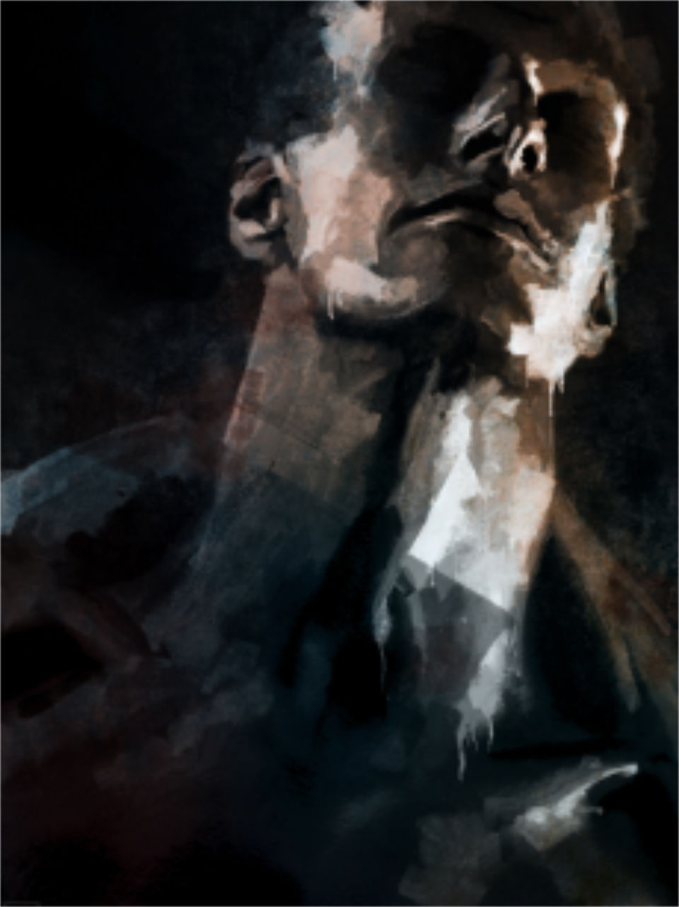

<!DOCTYPE html>
<html lang="en">
  <head>
    <title> Artworks by Mikael Cedergren. You gotta check this one out. </title>
    <meta charset="utf-8" />
    <meta name="author" content="Mikael Cedergren" />
    <meta name="description" content="Artworks, buy artwork prints, freelance artist, fine art by renowned artist Mikael Cedergren." />
    <meta
      name="keywords"
      content="cedergren, leander artwork, personal portfolio, artwork portfolio, buy artwork prints, fine art"
    />
    <meta
      name="apple-mobile-web-app-status-bar-style"
      content="black-translucent"
    />
    <meta
      name="viewport"
      content="width=device-width,initial-scale=1,maximum-scale=1,user-scalable=no"
    />
    <meta name="mobile-web-app-capable" content="yes" />
    <meta name="apple-mobile-web-app-capable" content="yes" />
    
    <link
      rel="shortcut icon"
      type="image/x-icon"
      href="/images/favicon.ico>"
    />
    <link rel="apple-touch-icon" href="" />
    <link rel="preconnect" href="https://fonts.gstatic.com" />
    <link
      href="https://fonts.googleapis.com/css2?family=Playfair+Display:ital,wght@0,400;0,700;0,900;1,400;1,700;1,900&display=swap"
      rel="stylesheet"
    />
    <link
      href="https://fonts.googleapis.com/css2?family=DM+Sans:ital,wght@0,500;0,700;1,500;1,700&display=swap"
      rel="stylesheet"
    />
    <link
      href="https://fonts.googleapis.com/icon?family=Material+Icons"
      rel="stylesheet"
    />
    <link rel="stylesheet" type="text/css" href="/styles/normalize.css" />
    <link rel="stylesheet" type="text/css" href="/styles/global.css" />
  </head>

  <body> </body
></html>


<div id="app">
  <div class="sidebar">
    <header class="hidden-responsive">
      
      <a href="https://society6.com/mikaelcedergren" target="_blank"
        >Buy Prints</a
      >
      <div class="social-media"
        ><!-- AddToAny BEGIN -->
        <div class="a2a_kit a2a_kit_size_32 a2a_default_style">
          <a class="a2a_button_facebook"></a>
          <a class="a2a_button_twitter"></a>
          <a class="a2a_button_pinterest"></a>
          <a class="a2a_button_facebook_messenger"></a>
          <a class="a2a_button_linkedin"></a>
          <a class="a2a_button_whatsapp"></a>
          <a class="a2a_button_reddit"></a>
        </div>
        <script async src="https://static.addtoany.com/menu/page.js"></script>
        <!-- AddToAny END --></div
      >
      <div class="mt-1 text-small">All rights reserved</div>
      <div class="text-small">&copy; Mikael Cedergren 2019-2022</div>
    </header>
  </div>
  <main>
    
    
    
    <section>
                  
                  <h3>Leander</h3>
                  <div class="overlay-description">
                    <p>Then dreadful thoughts of death, of waves heaped on him.<br />
                    And friends, and parting daylight, rush upon him.<br />
                    He thinks of prayers to Neptune and his daughters.<br />
                    And Venus, Hero's queen, sprung from the waters;<br />
                    And then of Hero only,—how she fares.<br />
                    And what she'll feel, when the blank morn appears;<br />
                    And at that thought he stiffens once again<br />
                    His limbs, and pants, and strains, and climbs,—in vain.<br />
                    Fierce draughts he swallows of the wilful wave.</p>
                  </div>
                </section>
                

    
    
    
    <section>
                  
                  <h3>Brutus</h3>
                  <div class="overlay-description">
                    <p>Men at some time are masters of their fates: The fault, dear Brutus, is not in our stars, But in ourselves, that we are underlings.</p>
                  </div>
                </section>
                

    
    
    
    <section>
                  
                  <h3>Observer</h3>
                  <div class="overlay-description">
                    <p>They flee from me that sometime did me seek<br />
                   With naked foot stalking in my chamber.</p>
                
                <p>I have seen them gentle tame and meek<br />
                   That now are wild and do not remember<br />
                   That sometime they put themselves in danger<br />
                To take bread at my hand; and now they range<br />
                Busily seeking with a continual change.</p>
                  </div>
                </section>
                

    
    
    
    <section>
                  
                  <h3>Thinker</h3>
                  <div class="overlay-description">
                    <p>What you think, you become.<br />What you feel, you attract.<br />What you imagine, you create.</p>
                  </div>
                </section>
                

    
    
    
    <section>
                  
                  <h3>Dahmer</h3>
                  <div class="overlay-description">
                    <p>I made my fantasy life more powerful than my real one.</p>
                  </div>
                </section>
                

    
    
    
    <section>
                  
                  <h3>Tribute</h3>
                  <div class="overlay-description">
                    <p>
                    Now, this is a special case. It's entirely dedicated to honor my father, and
                    even though it's not my normal style... I couldn't bare to remove it.
                  </p>
                  <p>
                    When I was a little boy there was a small, rectangular painting on the wall
                    next to my parents bedroom: a painting of a shark, and we all simply called
                    it "The Shark", or "Hajen" in swedish.
                  </p>
                
                  <p>
                    Somehow, within the family it gained somewhat of a cult status. We all loved
                    the way the light traveled through the surface of the water, the detail of
                    the animal and the angle from where it was painted. For others it was merely
                    just a painting, but for us... it was an artwork of pride: being my father's
                    painting.
                  </p>
                  <p>
                    Unfortunately he's now gone, and "Hajen" is no longer with me. So I decided
                    to honor my father and make my own.
                  </p>
                  <p>This is my tribute to my father; a real man and my biggest inspiration.</p>
                  </div>
                </section>
                
  </main>
</div>

</body>
</html>

